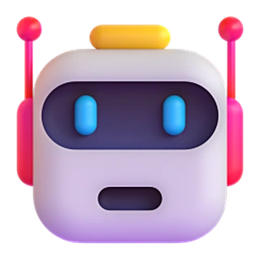
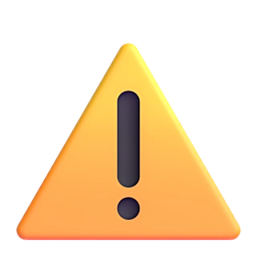

Test de 4 preguntas
¿Tu negocio sigue vendiendo si apagas el teléfono?
desliza para apagar
¿Tu formulario se llena de bots?

Contacto web38
?¡Te pongo #1 en Google!
M¿Me cotizan una cocina?Cliente
El arregloFormularios con filtro anti‑bots
¿Para cambiar un precio en tu web, esperas a alguien?

¿Me cambias el precio del combo?
Esta semana te lo hago 👍
¿Pudiste? Ya es jueves
El arregloTú cambias precios y productos
¿Si tú no contestas, nadie vende?

11:472 sin responder
A¿Tienen para mañana?
L¿Cuánto cuesta?
El arregloJuditos que contestan 24/7
¿Quién le pone los parches de seguridad a tu web?

Seguridad de tu web
!PHP sin parche: riesgo crítico
!Último respaldo: no hay
El arregloWebs sin PHP, con respaldo diario
Todo esto se arregla a un chat de distancia.
Te decimos con honestidad si podemos ayudarte.
Escríbenos por WhatsApp+1 305 934 9981